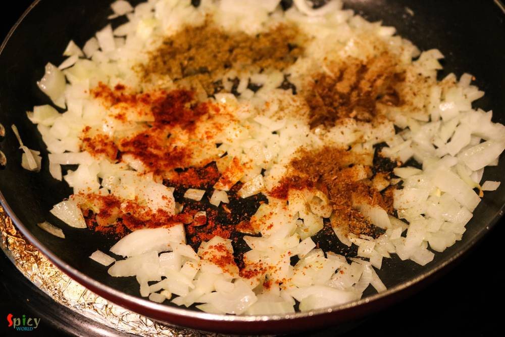

Simple and Easy Recipes
Pyaz Paratha / Onion stuffed Flat Bread
© 2016 Spicy World, Published on: Jun 16, 2016
Onion parathas can be anyone's savior because they are very easy to make. I know that in many households people loves to eat 'paratha' in their breakfast. Only we know about the pain of making time-consuming breakfast. But these parathas are so simple and take very less time to cook. We both thoroughly enjoyed the spicy onion filling inside those soft parathas. You can make 5 parathas with these proportions and serve them with pickles, raita or veg / non veg curry. These parathas can also be served in lunch box. Try this in your kitchen and enjoy a peaceful breakfast with your family.

Ingredients
- 1 big onion, finely chopped.
- 1 cup of all purpose flour / maida.
- Half Teaspoon of each (red chilli powder, roasted cumin powder, roasted coriander powder, amchoor powder, garam masala powder).
- Salt.
- Some chopped coriander leaves.
- Some chopped green chilies.
- Oil.
- Water.


Steps
Take flour, pinch of salt, 2 Teaspoons of oil in a mixing bowl. Mix well with your hand.
Then add little by little water and start mixing the flour. Make a soft dough.
Knead the dough very well with your hand, cover it with a damp cloth and keep aside for 20 minutes.
In the meantime heat a Teaspoon of oil in a pan.
Add chopped onion. Saute for 20 seconds and turn off the heat.
Now add all the spice powder and salt. Mix well.
Lastly add chopped coriander leaves and green chilies. Mix well.
The mixture is ready. Let it cool down a bit.
Divide the dough into same size balls.
Take one ball, roll it into some dry flour, flatten it with your hand and place a Tablespoon of onion filling in the center.
Seal the edges properly, roll it in some dry flour and flatten it with rolling pin.
Fry it with oil in a hot pan like usual paratha.
Make rest of them in this same way.
Your pyaaz parathas are ready ...
Enjoy them hot with pickles and raita ...
")